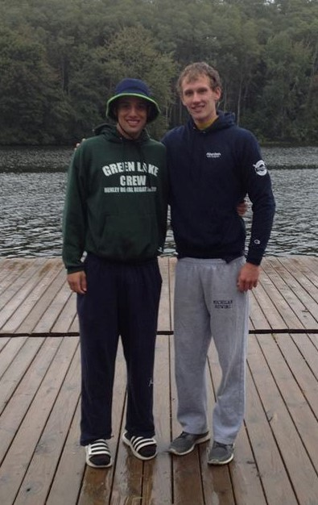

|
2015 Pairs Matrix
October 3, 2015
ANN ARBOR, MI
– On Saturday, October 3, the varsity squad of the University of Michigan Men's Rowing Team competed in the annual Pairs Matrix, a three - day intersquad competition done in small boats. The top varsity oarsmen are selected after the 10K erg test and divided into different heats, with each heat featuring four ports and four starboards. Each oarsman then rows four 900 - meter pieces, once in every shell and with every corresponding rower on the opposite side, as well as twice in bow and twice in stroke. Each pair is launched from the start (a buoy in the corner of the lower dam on Argo Pond) in 20 - second intervals, with no pair launching in the same order twice. At the end of the pieces, the times of each individual rower are added up to calculate their total time.

Since each rower spends two pieces bowing, steering is a critical factor in the racing. A similar sense of awareness is needed by the stroke, as the pieces have a maximum rate of 34 strokes per minute. Results of the Matrix are important, as they are the central selection process for the team's contingent at the Head of the Charles in Boston later in the month.
The first heat took place on the morning of Thursday, October 1. Senior and 2014 Pairs Matrix B - Final winner Ben Rebertus owned the starboard side, finishing 13.5 seconds ahead of sophomore Lakin Vitton. Both rowers advanced directly to Saturday's semifinals, while third and fourth place finishers James Garay and Jake Pretso moved on to Friday's repechages. On port side, Jordan Shore advanced to the semifinal over fellow juniors Ben Sonnega, Ben Getz, and Michael Griffin, all of whom were placed in Friday's repechage.
Thursday's second heat featured tighter racing, with seniors William Burstein and Alika Ziker tying for first after finishing only 0.9 seconds apart. Both advanced directly to Saturday's semifinals, while juniors Toby Buth and Phil Faris moved on to the repechage. The port side was dominated by reigning Pairs Matrix champion Alex Brown, who finished over 16 seconds ahead of second - place finisher Mitchell Tyson. Both Brown and Tyson, as well as third - place finisher Grey Braybrooks, moved on to the semifinals, while senior Ian McGraw was placed in the repechage.
McGraw proceeded to win his repechage easily and advance to the semifinal, along with Sonnega, while sophomores Levi Godin and Lyle Antieau III were relegated to the C - Final. On the starboard side, juniors Colin Darnton and Toby Buth progressed, while Phil Faris and Jake Presto tied for third and were placed in the C - Final.
In the second repechage, Getz finished only 0.4 seconds behind Griffin, resulting in a statistical tie and advancement to the semifinal, while Cameron Lekas and William Denman moved on to the C - Final. The starboard side also featured close racing, as winner Scott Griffith finished only 3.8 seconds ahead of Garay, moving both rowers on to Saturdays semifinals. Damian Rotarov and Garrett Klumpar filled out the remaining two spots in the C - Final after their finishes in the repechage.
A long day of racing on Saturday began at sunrise with the first semifinal. Burstein edged out Darnton on starboard side by 3.3 seconds, and both moved on to the A - Final while Garay and Vitton were put in the B - Final. Tyson dominated the port side, winning by nearly 15 seconds over Shore. Both advanced to the A - Final, while Sonnega and Getz were relegated to the B - Final.
In the second semifinal later that morning, Brown and Braybrooks tied for first, separated by only 1.4 seconds. McGraw and Griffin were sent to the B - Final on port, joined by Buth and Griffith from the starboard side after Ziker and Rebertus finished first and second and progressed to the A - Final.
In the early afternoon C - Final, Rotarov and Presto tied for first with a total time of 14:38.6, followed by Faris and Klumpar. Sophomore Godin dominated the port side with a total time of 14:28.7, over 16 seconds faster than Denman. Antieau III and Lekas rounded out the finishing order.
The B - final was also lacking in parity. McGraw, last year's third - place finisher in the A - Final, won the port side in 13:58.1, 23 seconds ahead of Sonnega. Getz and Griffin finished third and fourth. On the starboard side, Buth won over Vitton and 2014 A - Finalist James Garay, while Scott Griffith finished fourth.
The A - Final, beginning at nearly 5:00 PM, featured the same challenging conditions that had been seen throughout the Matrix: cold temperatures, a strong headwind, and rain. Ziker was paired with Tyson for the first piece, and the two posted a 3:19.5 (the second fastest time of the day) to put the rowers in the lead on their respective sides. Ziker would remain in control throughout, posting an even faster time with Brown at 3:17.3 and winning the Matrix on starboard side with a total time of 13:33.0. Darnton was a distant second at 13:51.3, 7.7 ahead of Rebertus and 8.8 ahead of Burstein. On the port side, Brown defended his title and won the Matrix for the second consecutive year, over 10 seconds ahead of Mitch Tyson. Juniors Shore and Braybrooks finished third and fourth, respectively.
The final results on starboard were, in order: Ziker, Darnton, Rebertus, and Burstein. On port, the order went: Brown, Tyson, Shore, and Braybrooks.
The squad will continue training in Ann Arbor before leaving for the Head of the Rock in Rockford, Illinois on Saturday, October 10.
###
|